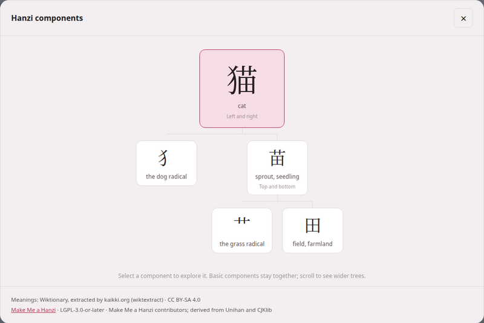

Kanji and Hanzi components
A kanji or a hanzi is rarely one indivisible shape: 猫 cat is 犭 the dog radical beside 苗 sprout, and 苗 is 艹 grass over 田 field. Seeing the parts is how the characters stop being a wall of strokes. Every Japanese and Chinese book reader and video player can take any character of its text apart into a tree of its components, from data you install once and then read offline.

1. The three packs#
The data comes in component packs, from three independent projects. You install them on the reading-help page, each a Character components row: KanjiVG on the Japanese card, Make Me a Hanzi on the Chinese card, and CJKVI-IDS on the card every language shares — with the same Get it, Rebuild and Remove… as every row on that page.
| Pack | For | Download | Licence | What is taken from it |
|---|---|---|---|---|
| KanjiVG | Japanese: the preferred pack | about 24 MB | CC BY-SA 3.0 | the named component groups of each character’s drawing |
| Make Me a Hanzi | Chinese: the preferred pack | about 3 MB | LGPL-3.0-or-later | each character’s decomposition, and nothing else |
| CJKVI-IDS | both, optional: a fallback where the preferred pack has no entry | about 3 MB | GPL-2.0 | the component description of each character, choosing the Japanese or the Chinese shape |
A row not yet installed says what it is for, shows a small component tree of what it adds, and names its project and licence on its last line; an installed one says how many entries it holds and its size, and offers Rebuild and Remove…, which asks in the row first.
The download is pinned: a fixed revision of each project, whose checksum is checked before anything is built — a download that does not match is refused. Only the structure is kept: no drawings, stroke paths, meanings, readings or pronunciations are imported from any of the three. The pack is built in a temporary file and swapped in whole, so a failed rebuild keeps the pack you had. Removing a pack leaves your books, videos and dictionaries exactly as they were.
The meanings under each component come from your dictionary, the one you installed for that language in the section above. The packs work without a dictionary; the tree simply says Meaning unavailable under each part and points you to the dictionary.
2. Taking a character apart#
- In a Japanese book reader or video player, press Decompose Kanji; in a Chinese one, Decompose Hanzi. In a book it is the last button of the header’s second row; in the player, the last button of the header. No other language shows it, and it is there whether or not a pack is installed.
- The button turns on, and a bar at the foot of the window says Choose a kanji in the text. (or hanzi) with a Done button. Every kanji or hanzi of the text is outlined with a dotted line; kana, punctuation and Latin letters are not.
- Click (or tap) a character. The dialog opens, titled Kanji components or Hanzi components, with the character’s tree.
If no pack for that language is installed, pressing the button opens the dialog with Install character components — Add a component pack once, then explore characters offline. and a link, Open dictionary & component setup, to the page’s components section.
Reading the tree#
The character stands at the top, large, with its meaning under it and how its parts are laid out (Left and right, Top and bottom, Full enclosure, Enclosed from above, Three stacked, Overlapping parts and the rest). Below it hang its components, each with its own meaning — and their components below them, as far as the data goes.
- Click a component to make it the top of a new tree. ← Back returns to the one before; Return to 猫 (the character you started from) goes straight back to the first.
- Familiar components stay whole. Pieces a learner knows as units — 木, 目, 心, 口, 田, 人 and their like — are not taken further, to keep trees readable; click one to see its own finer structure.
- A component shown as Select to explore further was cut short because the tree was getting too deep or too wide; click it to continue.
- Partial form marks a component that appears in a shortened shape; Form of 水, where a variant has no meaning of its own, names the full character it stands for; Unlabelled component is a part the source has no character for.
- A wide tree scrolls sideways, and opens centred on its top.
- This character is a basic component in this source. — it has no parts to show. No component decomposition is available for this character. — none of your packs has it; the link under it, Manage component packs and fallback coverage, leads to where CJKVI-IDS can be added as a fallback.
- Loading components… shows under the character while its tree is fetched. When it cannot be, the dialog says Could not load 苗 (the character you asked for) with the reason under it and a Try again button — and, if you had come down from another character, Return to 猫 as well. When the mode itself could not start (the server did not answer, say), pressing Decompose gives Could not load component data and its own Try again.
- The local component data could not be read. Reinstall it from setup. is that reason when the pack file on this machine is damaged: press Rebuild on its row of the reading-help page (or Get it, if the row no longer knows the pack).
The foot of the dialog credits what was used: Meanings: and the dictionary’s source and licence (or Install the Chinese dictionary to show component meanings. with Open setup), then every pack that supplied a part of this tree, fallback included, with its licence and attribution. Where a character carries a variation selector and the pack has only its base form, the dialog says Showing the default character structure for this glyph variant.
Keyboard, playback and leaving#
- Keyboard: in selection mode, Tab moves from character to character and Enter or Space opens one.
- Escape closes the dialog; pressed again, it leaves selection mode. Clicking outside the dialog, or its ×, also closes it.
- Closing the dialog keeps the mode on, so you can open the next character straight away. Done, or the Decompose button again, leaves it, and the outlines go.
- While you are choosing, clicks in the text do nothing else — no gloss cloud, no copy, no card, no jump in the recording — so a click meant for a character never sets anything else going. Opening a tree pauses the narration or the video; start it again with the reader’s own controls.
- The furigana and pinyin over the text are left alone, and the text is exactly as it was when the mode ends.
After updating Parseh
A book reader is a page built from the book, and one built by an older Parseh has no Decompose button. Press rebuild the reader in the book’s header to give it one. Video pages pick up the new button when they are reloaded; if Parseh was running while it was updated, restart it first.
For the command line
python3 lib/getdecomposition.py kanjivgpython3 lib/getdecomposition.py makemeahanzipython3 lib/getdecomposition.py cjkvi# offline, from a copy you downloaded yourself: KanjiVG's repository ZIP,# Make Me a Hanzi's dictionary.txt, or CJKVI's ids.txtpython3 lib/getdecomposition.py makemeahanzi --input path/to/dictionary.txtA pack built from a local file is labelled local import and keeps its checksum; keep the project’s notice files beside the text file (COPYING and LGPL for Make Me a Hanzi, README.md for CJKVI) and they are stored in the pack with it.